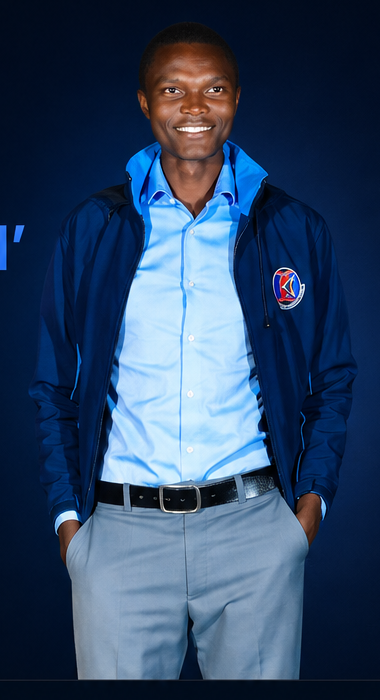

▥
Data Analysis
Clean, analyze and interpret data to uncover trends, patterns and actionable insights.
I specialize in Excel, SQL, Power BI, Python and AI tools to
analyze data, automate processes and create interactive
dashboards that support smart decision-making.

Clean, analyze and interpret data to uncover trends, patterns and actionable insights.
Build interactive dashboards and reports using Power BI to support data-driven decisions.
Work with SQL and Excel to organize, manipulate and manage data efficiently and accurately.
Leverage Python and AI tools to automate tasks and build intelligent solutions.
I am a data enthusiast with a passion for solving real-world problems through data. I enjoy transforming raw data into meaningful insights that help organizations grow and make better decisions.
My toolkit includes Excel, SQL, Power BI, Python, and AI tools, and I am constantly learning and building projects that improve my skills and create value.
Excel dashboard for branch performance, due accounts, balances, targets and collection outcomes.
Excel · Dashboards · KPIsCompany comparison using profitability, ROE, EPS growth, dividends, valuation, debt and liquidity.
Excel · Finance · AnalysisData-driven research exploring factors associated with youth engagement in agribusiness in Kenya.
Research · STATA · StatisticsOperational reports converting raw data into rankings, risk indicators, trends and management actions.
Excel · Reporting · AnalyticsPerformance monitoring, customer engagement, reporting, target tracking and data-driven follow-up.
Applied analytical and statistical methods to business and research questions.
Building deeper capability in artificial intelligence, machine learning and modern data workflows.
University of East London
Expected start: September 2026[Add institution and year]
I'm open to professional opportunities, analytical projects and meaningful collaborations.
Get in touch →